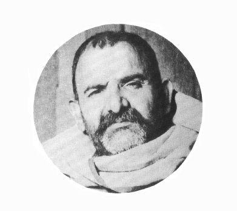

GURU

Question: I have read in many holy books that you need to have a guru, a spiritual guide, to realize an enlightened state. If this is true, how do I go about finding one?
Answer: At certain stages in the spiritual journey, there is a quickening of the spirit which is brought about through the grace of a guru. When you are at one of the stages where you need this catalyst, it will be forthcoming. There is really nothing you can do about gurus. It doesn’t work that way. If you go looking for a guru and you are not ready to find one, you will not find what you are looking for. On the other hand, when you are ready the guru will be exactly where you are at the appropriate moment.
All you can do is purify yourself in body and mind. Each stage of purification will make you sensitive to new levels of perception. Finally you arrive at a level where the guru is. There is no one who is ready for the grace of the guru who does not receive it at that very moment.
Question: Does everyone have a guru?
Answer: Yes. However, you may or may not meet your guru on the physical plane in this lifetime. It isn’t necessary. Since the relation between a guru and chela (disciple) is not on the physical plane, the guru can act upon you from within yourself. You may meet him through dreams or visions or merely sense his presence. However, it is only after much purification that you will honor these meetings rather than rejecting them in favor of the more gross manifestations. There have been many saints who realized enlightenment without ever meeting their guru in a physical manifestation.
Question: How will I know how to purify myself without the guidance of a guru?
Answer: Relax. You are being guided. In fact, the next message you need in the treasure hunt is exactly where you are when you need it. The message may be in the form of a teacher or a lover or an enemy or a pet or a rock or a chemical or a book or a feeling of great despair or a physical illness or the eyes of a person you pass on the street.
Question: What is the difference between a teacher and a guru?
Answer: A teacher points the way. A guru is the Way. In the course of your awakening you will have thousands of teachers. Throughout all of this teaching, the guru waits, beckoning from beyond.
Question: There are many beings who profess to be gurus. Should I follow one of them? How do I choose from among them?
Answer: You can’t choose to follow a guru. It doesn’t work that way. If you are in doubt, don’t. When the correct manifestation of the guru for you appears, you’ll know it with all your heart. It is surrender which is no surrender. It is inevitable and totally compelling.
Now, it is possible that a being who is ultimately to be known to you as your guru comes forward and says, “I am your Guru.” And you hold back. That’s because you are not yet ready. You can’t honestly do otherwise. Don’t worry. When you are ready, he’ll be back. Just relax and trust the process.
Question: What kind of teachers should I study with?
Answer: Listen to your inner being. If you are at the point where you sense you need instruction in calming your mind or getting your body in shape, then you will become sensitized to available teachers who can instruct you concerning the specific practices required. Often you will find a teacher who knows the specific information although he doesn’t elicit in you a great love or trust. Honor him as your teacher, learn what you can, and then move on. Trust the messages coming from your heart and intuition.
This journey is an inner journey. The charisma of an impure being such as a Hitler would not be of influence on another person were that person totally honest with himself and totally true to his inner voice. There is a place in each human being where at all times he knows exactly “where it is at.” So, if in doubt about the next step, just listen. And if still in doubt, wait. When it’s time to move, you’ll know.
Exercises
1. Purification Exercise with Guru Rimpoche
Consider a being of pure light and love (whom you can name Padmasambhava, the Lotus-evolved One, if you would like), who is sitting in the midst of a lake on a lotus flower in front of you. He is seen as being in front of you and slightly above you . . . so that you look up to him at about a thirty degree angle. He will come into your heart when you have sufficiently purified yourself.
1. Closing your left nostril, breathe three deep breaths out of your right nostril. Visualize the air being ejected as dark red and consider it to be all of your bodily diseases and attachments.
2. Close your right nostril. Now breathe out three deep breaths through your left nostril. Visualize the air being ejected as a blue-grey and consider it to be all your mental obstacles and anger.
3. Now breathe out three deep breaths through your mouth. Visualize this air as purple and consider it as the sloth that impedes your progress . . . the inertia . . . breathe it out.
4. Now visualize that from the ajna (the point between the eyebrows) of Padmasambhava directly to your ajna there is a piercing beam of white light which, as it burns into you, rids you of bodily sins and wrongs (the sound connected with this is OM).
5. Now visualize a red beam from the throat chakra (point of energy) of Padmasambhava directly to your throat center. This beam rids you of lapses of speech, of untruths (the sound connected with this is AH).
6. Now visualize a blue beam of light coming from the heart of Padmasambhava to your heart. This beam purifies you of wrongs done in ignorance, wrong thoughts (i.e., thoughts which maintain the illusion). (The sound associated with this beam is HUM.)
7. Now allow that blue beam to become a broad blue avenue of light. Then you will see Padmasambhava come down that avenue and come directly into your heart. Here he will sit in your hridayam (spiritual heart). His mantra is: Om Ah Hum Vajra Guru Padma Siddhi Hum. This means three-in-one (the unmanifest, imminent manifestation, and manifestation) lightning- bolt Guru of unbearable compassion and infinite power who resides in my heart. To say his mantra is to keep Him in your heart . . . until finally you and He become One.
2. The Four Bodhisattva Vows (say three times)
1. I resolve to become enlightened for the sake of all living beings.
2. I will cut the roots of all delusive passions.
3. I will penetrate the farthest gate of Dharma.
4. I will realize the supreme way of Buddha.
Potent Quotes
“Guru, God, and Self are One.”—Ramana Maharshi
“Silence thy thoughts and fix thy whole attention on thy Master, whom thou dost not see, but whom thou feelest.”—Blavatsky
“The influence of the Guru is obstructed by mental activity, by reliance on one’s own exertions and by every kind of self-consciousness and self-exertion.”—Sathya Sai Baba
“What is the nature of Guru’s grace?
It is beyond thought and word.
Then how can it be said that the devotee realizes his true
Being by virtue of the Guru’s grace?
It is like an elephant waking up on seeing a lion in a dream.
Just as the appearance of the dream lion is enough to wake the
elephant so also the glance of grace from the master is enough to
waken the devotee from the sleep of ignorance to the Knowledge of
the Real. It is sure and certain.”—Ramana Maharshi
Disembodied guru to disciple: “Child you must meditate more. Your gaze is not yet faultless. I was fairly extinguished in the ether by the agitation of your restless mind.”—Babaji
“I beseeched him fervently thus: ‘It is my great desire that I should actually experience your gracious wisdom. Kindly fulfill my desire.’ In those days Sri Ramana was not speaking much. Still he spoke kindly as follows: ‘Is it the body in front of me which desires to obtain my grace? Or is the awareness within it? If it is the awareness, is it not now looking upon itself as the body and making this request? If so let the awareness first of all know its real nature. It will then automatically know God and my grace. The truth of this can be realized even now and here.’ ”—Ramana Maharshi magazine
“Rain water falling upon the roof of a house flows down to the ground through spouts shaped grotesquely like a tiger’s head. One gets the impression that the water comes from the tiger’s mouth, but in reality it descends from the sky. In the same way the holy teachings that come from the mouths of godly men seem to be uttered by those men themselves, while in reality they proceed from God.”—Ramakrishna
“The Grace of the Guru is like an ocean. If one comes with a cup he will only get a cupful. It is no use complaining of the niggardliness of the ocean. The bigger the vessel the more one will be able to carry. It is entirely up to him.”—Ramana Maharshi